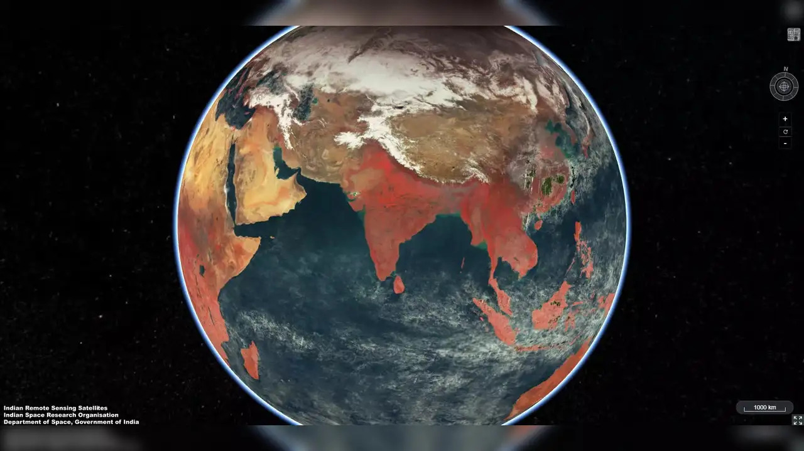
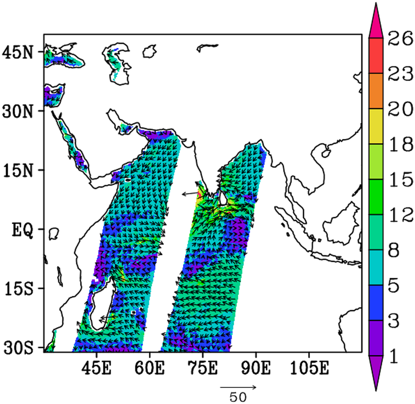

Example Data Products
Here are some examples of the types of data you can find and ask about using our AI assistant.
INSAT-3D Weather Imagery
Real-time satellite images tracking cloud cover, cyclones, and weather patterns across the Indian subcontinent.

Oceansat Sea Surface Temp
Data maps showing the surface temperature of the oceans, critical for climate and monsoon studies.
SCATSAT-1 Ocean Winds
Scatterometer data providing the speed and direction of winds over the ocean surface.
